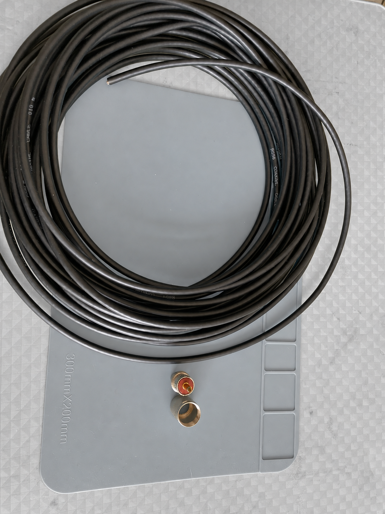
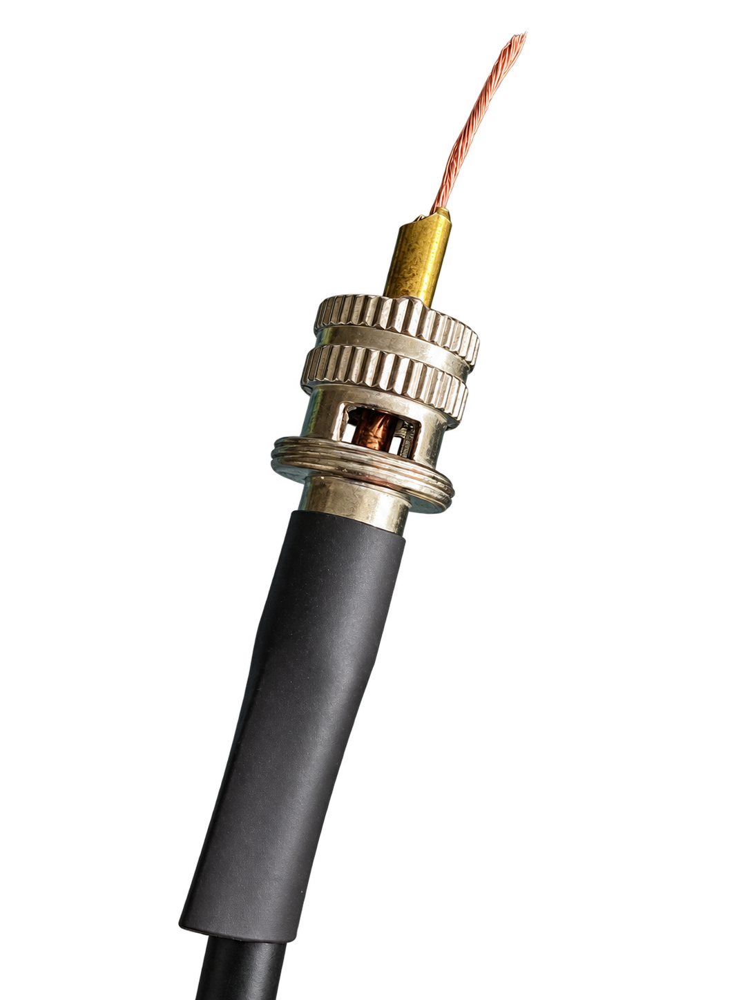
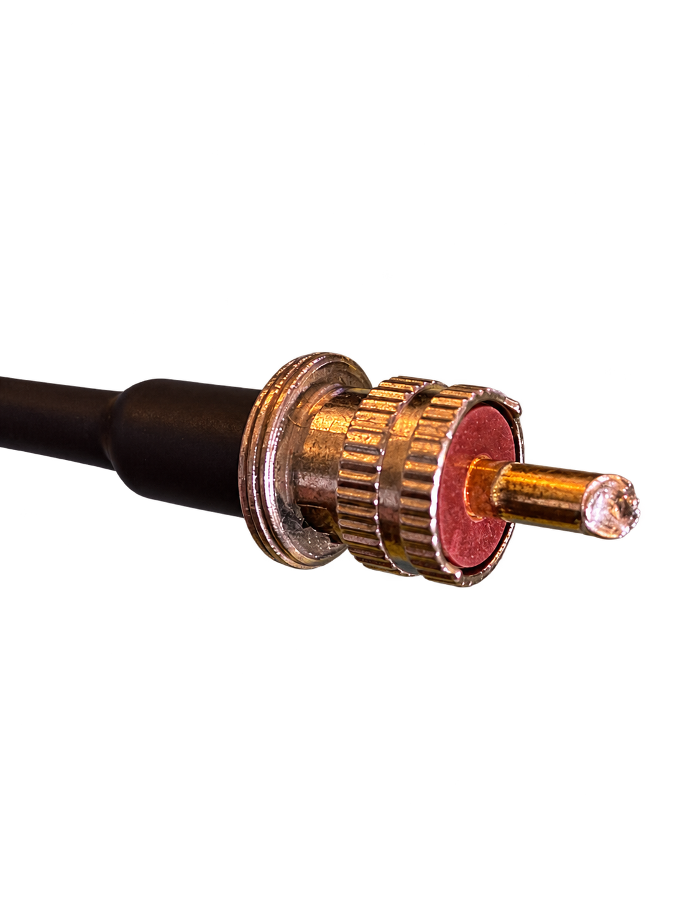
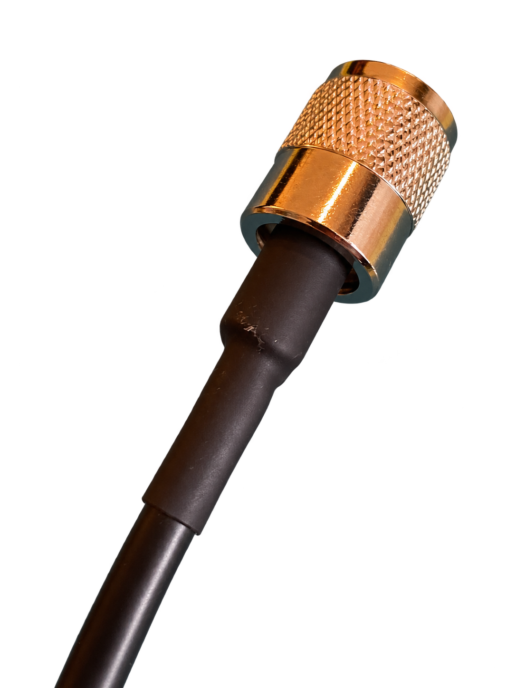
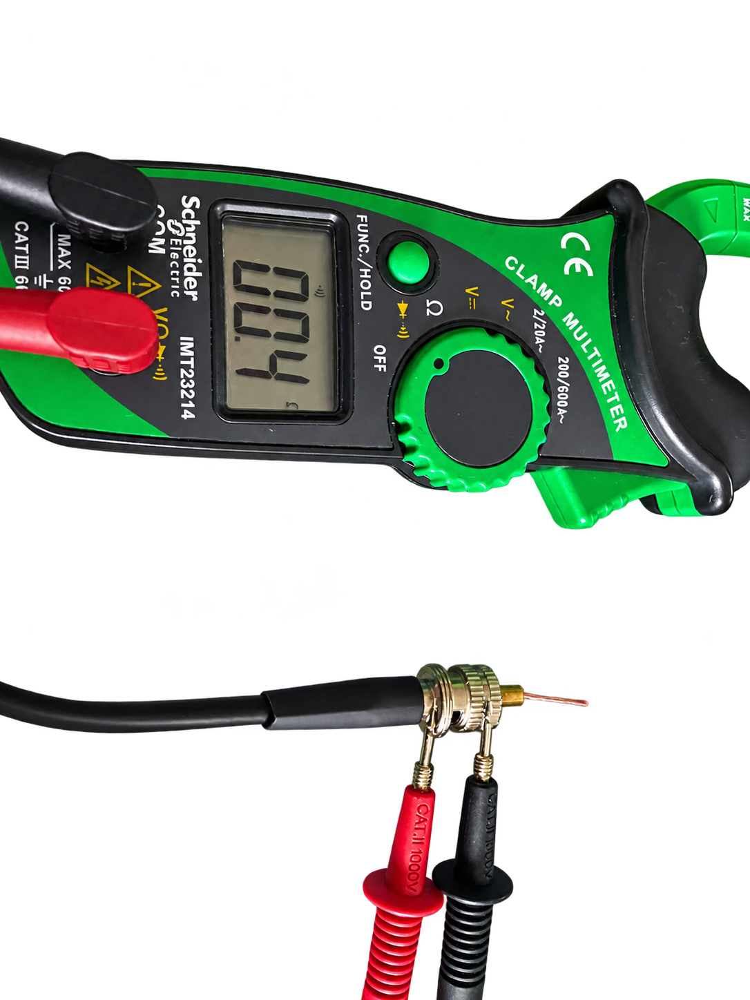
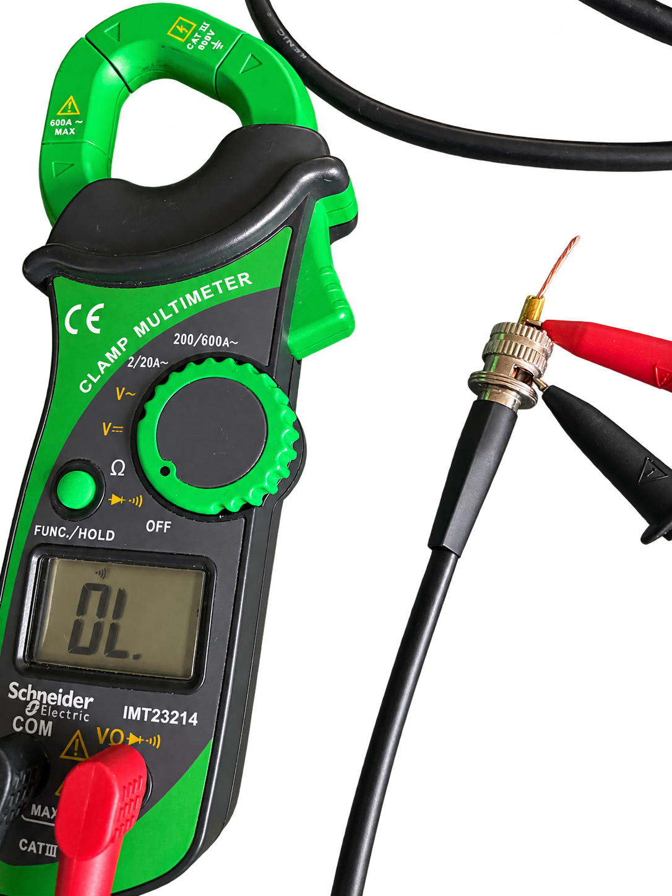

Esta guía muestra el acabado y las pruebas de un PL-259 que permite fijar la malla mediante rosca. Otros modelos requieren soldar o crimpar la malla. Antes de pelar, identifica la fijación y las medidas indicadas para tu conector y su adaptador; no copies medidas de otro modelo.
Del cable al conector
El coaxial utilizado es RG58. Comprueba la compatibilidad del conector con el diámetro del cable y coloca primero la tuerca de acoplamiento y el termorretráctil, si corresponde.

- Prepara el coaxial. Pela según las medidas del modelo, conservando el vivo, la malla y el aislante que deben permanecer. Evita cortar hebras o dañar el aislante.
- Fija la malla. En el conector de estas fotos quedó sujeta mediante rosca, según permite su diseño. La unión debe quedar firme, sin hebras que alcancen el vivo.
- Introduce el vivo en el pin. La foto muestra el conductor sobresaliendo durante el armado. Todavía no es el acabado final.
- Termina el pin. Recorta el excedente conforme al conector y suelda el vivo al pin central. Deja enfriar sin mover y revisa que el aislante no se haya deformado.


Cómo revisar el acabado
- Sin vivo sobresaliente, hebras sueltas ni rebabas que dificulten el acoplamiento.
- Soldadura que una el vivo con el pin; no basta con tapar el extremo.
- Pin sin deformación y aislante sin daño visible por calor.
- Cable firme: una tracción suave no debe hacerlo deslizar dentro del cuerpo.
- Termorretráctil ajustado a la salida, sin bloquear la tuerca.
- Tuerca libre y rosca que acople sin forzar sobre una toma SO-239.

El termorretráctil mostrado no garantiza por sí solo impermeabilidad. Si la conexión queda al exterior, protege la unión frente al agua con un sistema adecuado al montaje.
Tres comprobaciones con multímetro
Desconéctalo del transmisor, de la antena y de cualquier carga. Haz las mediciones sin alimentación. Una antena conectada puede crear un camino eléctrico entre vivo y malla y cambiar la interpretación.
Junta primero las puntas del multímetro y observa su resistencia. Una lectura baja incluye la resistencia de las puntas y sus contactos; no necesita ser exactamente cero.
1. Malla con cuerpo metálico
Durante el montaje, comprueba el contacto entre las partes metálicas que sujetan la malla y el cuerpo del PL-259. En esta toma el instrumento indicó 0,4 Ω. Es una prueba local: no comprueba toda la longitud de la malla.

2. Vivo con pin central
Antes de terminar la punta, coloca una sonda sobre el vivo accesible y la otra sobre el pin. Debe haber un camino de baja resistencia y estable. Al finalizar, comprueba de extremo a extremo: pin de un lado con vivo o pin del otro.
3. Vivo separado de malla
Coloca una punta en el pin central y la otra en el cuerpo metálico. Con el cable aislado y las sondas haciendo buen contacto, debe indicar circuito abierto: normalmente OL en el rango utilizado.

La toma documenta la lectura observada; no deja visible el estado del otro extremo. Para repetirla como comprobación del cable, déjalo desconectado en ambos extremos.
| Prueba | Dónde medir | Qué esperar |
|---|---|---|
| Vivo | Vivo o pin de un extremo al otro | Resistencia baja y estable, coherente con cable y puntas |
| Malla | Malla o cuerpo de un extremo al otro | Resistencia baja y estable |
| Separación | Pin central y cuerpo | Circuito abierto; normalmente OL |
Repite las pruebas moviendo suavemente la salida del cable: la lectura no debería saltar entre continuidad y circuito abierto. Estas pruebas comprueban conexiones en corriente continua; el comportamiento en radiofrecuencia se evalúa después con un instrumento adecuado.
Antes de conectarlo
- Revisa el pin, la soldadura y el aislante.
- Comprueba sujeción del cable y movimiento de la tuerca.
- Verifica vivo y malla de extremo a extremo.
- Comprueba que vivo y malla estén separados con el cable aislado.
Registramos una ROE indicada de 1,01:1 a 146,910 MHz, medida junto al handy con 14 metros de RG58. Consulta las condiciones y la fotografía en la prueba de la Flower Pot.
Fotografías y datos aportados por CA3HMM.